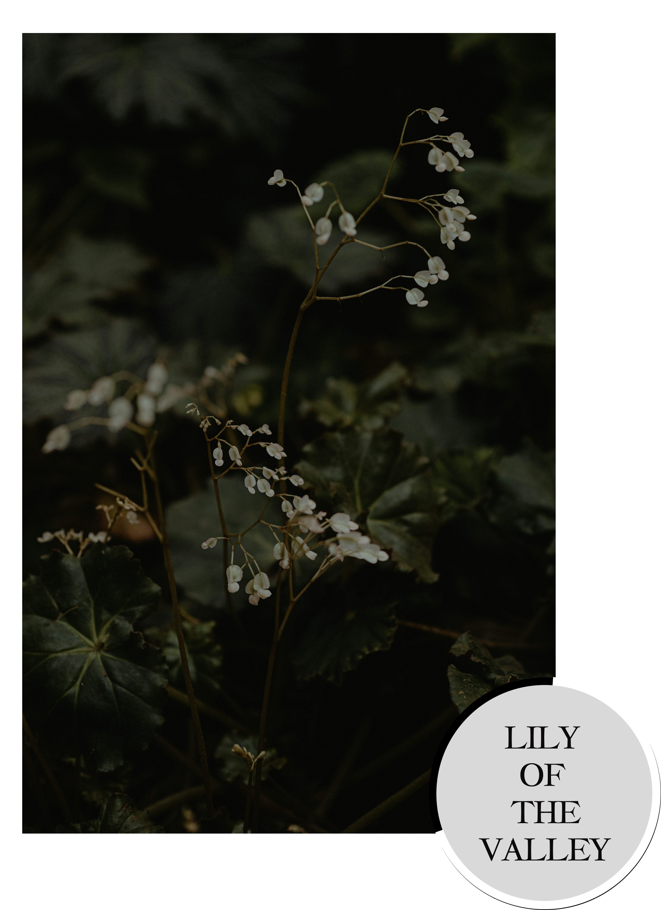

What's The Essence of a Flower?
The essence of a flower is made for people to tap in with aromatic therapy. A flowers essence is quite literally the energy captured from the flowers petals and then turned into a substance to be consumed by the nose or potentially, the mouth.

Flower essences has been used since acient times and they have been used to balance emotioms, improve a humans mental, physical and spiritual being, ease anxiety and pain, improve anxiety related issues, and many other conflicts. Flower essences are safe to use but they may be cause side affects. It's best to speak to a docotor whether or not for you to be required a flower essence
as coping before you try it on your own.
How are they made?
To produce the essence of aflower, you must extract the flowers petals in natural spring water, boil the water, filter the water and the preserve it with a brandy. Next, you must extract it with oil by picking the petals, adding home oil to it and after letting it sit for a whole day, you strain the mixture. There's not much to it if you follow these steps carefully and with purpose.
